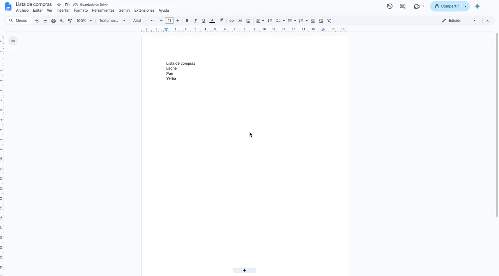
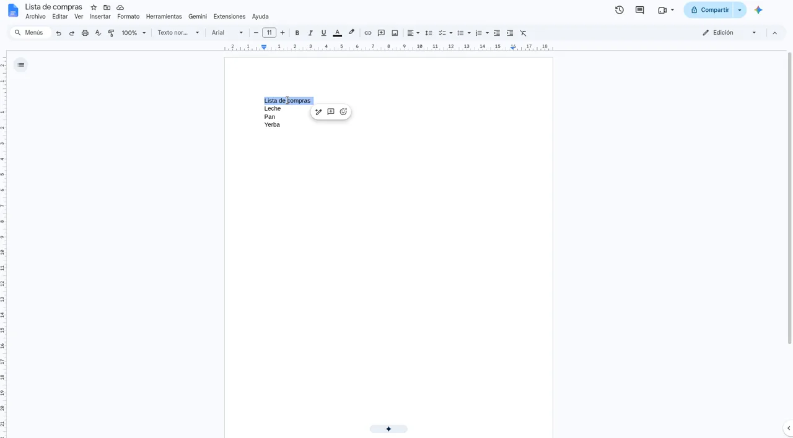
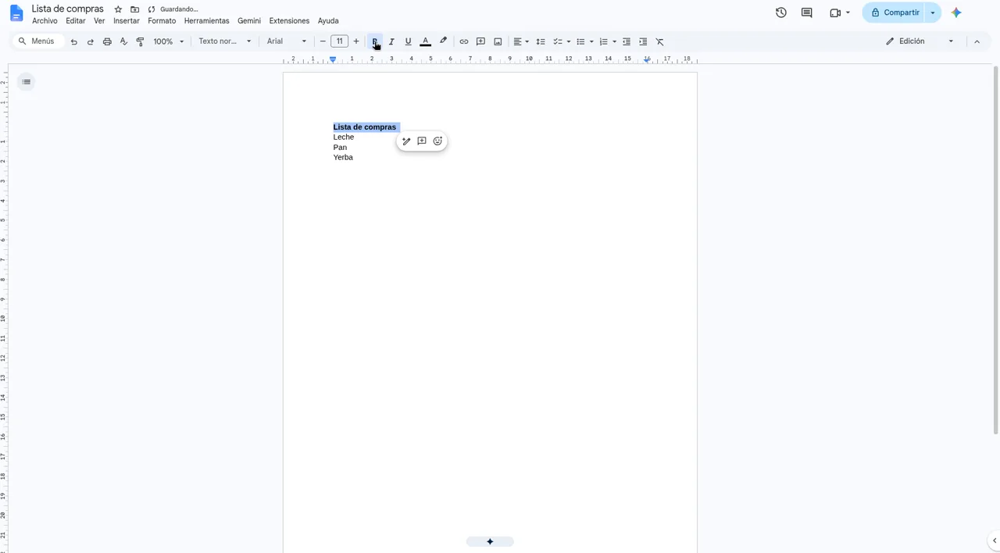
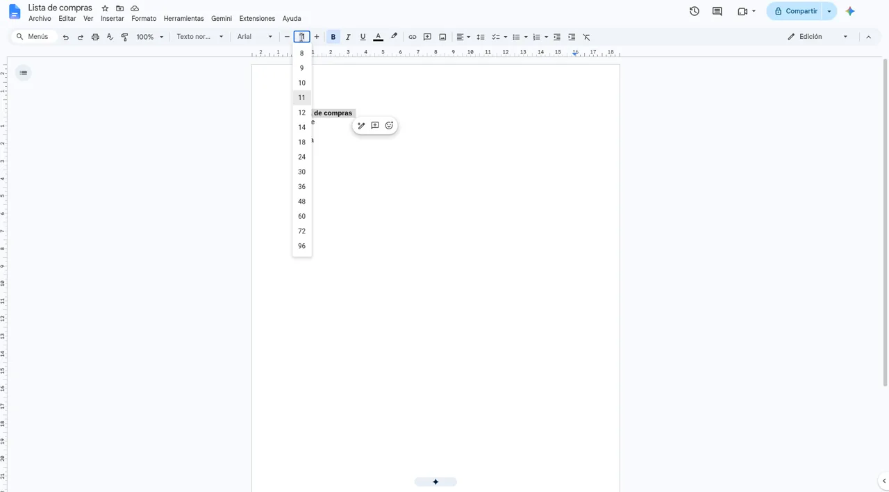
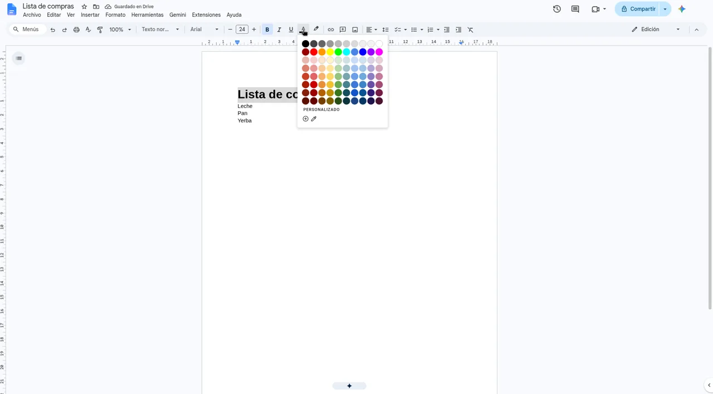
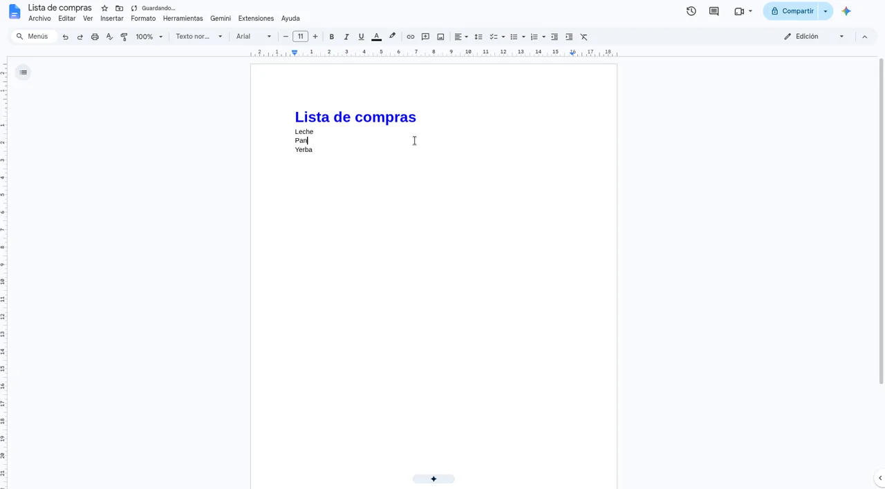

Curso de Google Documentos › Formato › Lección 32
Lección 32 de 53 · menú Formato
Cómo poner negrita, cambiar tamaño y color de letra en Google Docs (3 pasos)
Fecha del video: · Programado
¿Tu texto se ve todo igual? En Documentos de Google podés resaltar un título con negrita, otro tamaño y color en 3 pasos.
En el ejemplo usamos una lista de compras y vamos a darle estilo al título.

Paso 1: seleccioná el texto
Hacé doble clic sobre una palabra o triple clic para elegir toda la línea.

Paso 2: negrita y tamaño
Tocá la B de la barra de herramientas (Negrita) o usá Ctrl + B. Después abrí «Tamaño de fuente» y elegí el número que quieras; en el ejemplo, 24.


Paso 3: elegí un color
Tocá la A de «Color del texto» y elegí un color de la paleta.


Tip: el formato se aplica solo al texto seleccionado. Para volver atrás, usá Ctrl + Z.
Mirá el Short
Estreno del Short: 19/11/2026 · 17:00 (hora Argentina)
Video relacionado: Google Docs para principiantes: lo básico paso a paso — el video largo del Bloque 1 – Lo básico (verlo en YouTube).
Fuente oficial: Ayuda de Editores de Documentos de Google. Capturas propias en un documento de ejemplo («Lista de compras»). El video usa voz generada con IA.